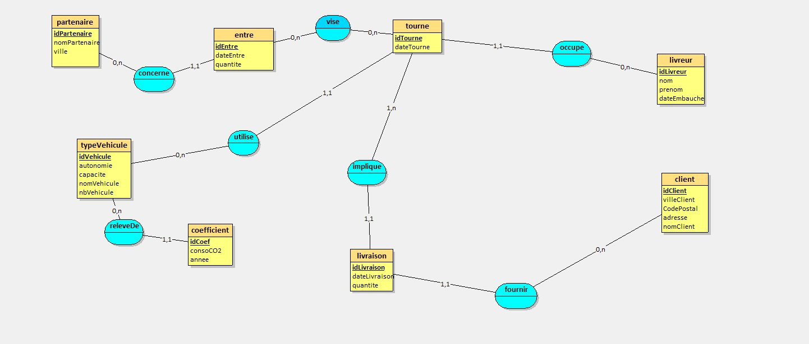

Fév – Avr

Description
Cette SAé portait sur la conception et le déploiement d'une base de données relationnelle pour l'entreprise fictive GreenSD, spécialisée dans la livraison bas-carbone en zone urbaine. À partir de fichiers CSV imparfaits, le travail consistait à modéliser les données (MCD, MLD), créer la base sous MySQL, importer les données via Python et écrire des requêtes SQL complexes.
Compétences acquises
Outils & Technologies
Ce que j'ai appris
Il ne faut pas hésiter à revoir et corriger son travail plusieurs fois. J'ai dû refaire plusieurs fois le modèle relationnel car j'avais mal posé les cardinalités ou oublié certaines données dans les tables. Cette SAé m'a également appris à bien analyser les fichiers Excel en entrée avant tout traitement, et à gérer correctement toutes les erreurs qui peuvent survenir lors de l'import des données.